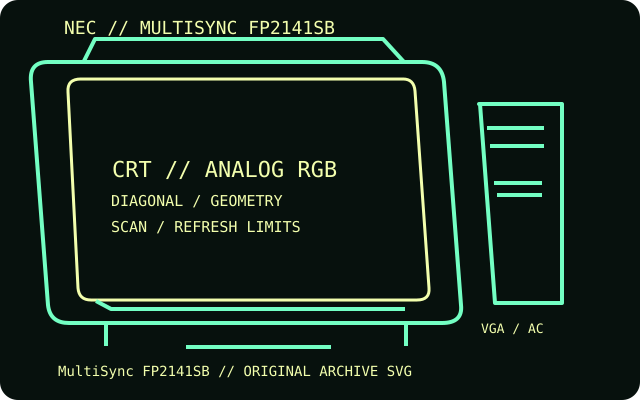

[ INDIVIDUAL COMPONENT // DISPLAYS ]
NEC MultiSync FP2141SB
A professional 22-inch-class SuperBright aperture-grille monitor with dual analog inputs and a four-port USB hub.

IDENTIFICATION: Match the complete model and regional suffix on the rear label. Published CRT timing limits do not guarantee a particular used unit's condition; verify the tested host, cable and displayed mode.
Specifications
| Catalog subcategory | CRT displays |
|---|---|
| Exact product / family | NEC MultiSync FP2141SB |
| Tube diagonal & image geometry | 22-inch nominal tube, about 20-inch viewable diagonal; 0.24 mm aperture-grille pitch; 4:3 image geometry. On-screen controls provide size, position, pincushion and convergence adjustments. |
| Resolution & refresh | Maximum 2048 × 1536 at 86 Hz; 1600 × 1200 at up to 109 Hz is a common documented mode. Horizontal scan range 30–140 kHz, vertical range 50–160 Hz. |
| Video inputs | Two 15-pin mini D-sub (HD-15/VGA) inputs and a five-BNC RGBHV set; supports separate, composite and sync-on-green. USB 2.0 hub is data-only, not a video input. |
| Power | 100–120 V or 220–240 V AC, 50/60 Hz (regional version dependent); 120 W average and 145 W maximum. Use the inlet/nameplate rating for the specific unit. |
| Host compatibility | Works with analog RGB workstation and PC outputs within the stated scan range. Choose one HD-15 or BNC path; for BNC, the source must supply compatible RGB and sync. A USB host connection is needed to use the hub. |
Identification and compatibility notes
The model is also identified as Mitsubishi Diamond Pro 2070SB in some regions. This record is for the NEC FP2141SB label; regional bundles and USB details can differ.
Record the rear-label model, regional voltage rating, video connector used, source timing, adapter chain, visible image area and geometry/convergence condition. CRTs contain hazardous high-voltage circuits and heavy components; internal service belongs to qualified technicians.
Manufacturer documentation and sources
- NEC — MultiSync FP2141SB user manualModel-specific operating instructions and specifications.
- CRT Database — NEC MultiSync FP2141SBModel identity, timing examples and input overview.